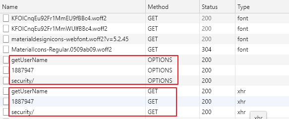

对于非简单请求 或者初次请求失败后，浏览器会使用 options 方法发起 `preflight request’

preflight request 也就是通常所说的预检请求，如果预检请求失败，可能会出现如下的错误：
Access to XMLHttpRequest at 'http://localhost:8080/security/' from origin 'http://localhost:3000' has been blocked by CORS policy: Response to preflight request doesn't pass access control check: No 'Access-Control-Allow-Origin' header is present on the requested resource.
preflight request 一般会包括一下几个信息：Access-Control-Request-Method 和 Access-Control-Request-Headers，以及一个 Origin 首部
比如客户端在发起 DELETE 请求之前会发起如下的预检请求：
OPTIONS /resource/foo
Access-Control-Request-Method: DELETE
Access-Control-Request-Headers: origin, x-requested-with
Origin: https://foo.bar.org
如果服务器允许 DELETE 请求，就会发回如下的回应：
HTTP/1.1 200 OK
Content-Length: 0
Connection: keep-alive
Access-Control-Allow-Origin: https://foo.bar.org
Access-Control-Allow-Methods: POST, GET, OPTIONS, DELETE
Access-Control-Max-Age: 86400
预检请求会做如下的检查：
access-control-request-method (当前为 DELETE)，是否在 Allow-Methods 列表中因此上面失败的 log 意味着第二个检查的失败，此种情况是服务器根本没有返回 Access-Control-Allow-Origin 头部
More： https://developer.mozilla.org/en-US/docs/Web/HTTP/CORS